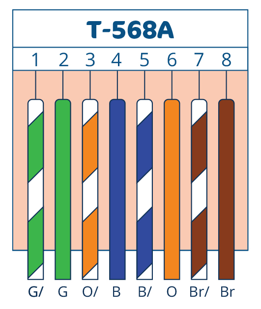
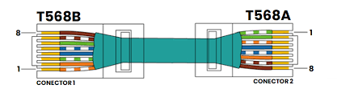
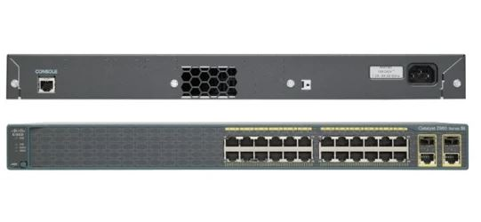
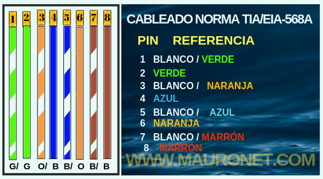

Empecemos con lo principal
¿Qué es Ethernet? En el sentido más amplio, la definición correcta de Ethernet es “tecnología o conjuntos de tecnologías que sirven para conectar diferentes dispositivos electrónicos en una red local”. A estas redes se las conoce como LAN (Local Area Network). También se puede usar en una WAN (Wide Area Network). Ethernet es una tecnología muy presente en casa y en la oficina, pero todavía bastante desconocida. Permite conectar dispositivos en una red LAN o WAN por cable. Esta tecnología se empezó a desarrollar en 1970.
Para qué sirve
Su función principal es enviar paquetes de datos a través de un cable. Como ya se ha visto, estos datos pueden enviarse únicamente para compartir información entre dispositivos que están físicamente en el mismo lugar, pero también para conectarse a internet.
Ethernet es una de las mejores opciones de conexión de red. Esto es gracias a que cuenta con algunas ventajas de las que no disponen las redes WLAN (Wireless Local Area Network), que utilizan protocolos de conexión inalámbricos, como el wifi
Tipos de Ethernet
Aunque el concepto Ethernet hace referencia a una tecnología, cuando se habla de tipos de Ethernet normalmente se está haciendo mención a los cables que transportan estos datos. Es decir, los cables Ethernet, también conocidos como cables RJ45.
Actualmente existen siete tipos de Ethernet o cables RJ45. La diferencia radica principalmente en las velocidades de transferencia que ofrecen, la velocidad de descarga o la frecuencia (o potencia de la red). Hay que tener en cuenta que, cuanto más largo sea el cable, sufre una mayor pérdida de potencia.
Estos son los tipos de cables Ethernet que se pueden comprar actualmente:
Ethernet Cat 5
-Velocidad de transferencia de 100 Mbps, velocidad de descarga de 15,5 MB/s y potencia de 100 MHz.
Ethernet Cat 5E:
-Velocidad de transferencia de 1.000 Mbps, velocidad de descarga de 150,5 MB/s y potencia de 100 MHz.
Ethernet Cat 6:
-Velocidad de transferencia de 1.000 Mbps, velocidad de descarga de 150,5 MB/s y potencia de 250 MHz.
Ethernet Cat 6A
-Velocidad de transferencia de 10.000 Mbps, velocidad de descarga de 1.250 MB/s y potencia de 500 MHz.
Ethernet Cat 7:
-Velocidad de transferencia de 10.000 Mbps, velocidad de descarga de 1.250 MB/s y potencia de 600 MHz.
Ethernet Cat 7A:
-Velocidad de transferencia de 10.000 Mbps, velocidad de descarga de 1.250 MB/s y potencia de 1.000 MHz.
Ethernet Cat 8:
-Velocidad de transferencia de 40.000 Mbps, velocidad de descarga de 5.000 MB/s y potencia de 2.000 MHz.
Estandares de Cable
-
T568A
- Estándar de cableado estructurado para redes Ethernet. Define la disposición de los pares de colores dentro de un conector RJ45.
- Orden inverso de los pares naranja y verde en comparación con T568B.
- Menos utilizado en nuevas instalaciones. Puede encontrarse en instalaciones antiguas o en entornos específicos.
- Puede ser útil en ciertas configuraciones de red o para solucionar problemas específicos.

-
T568B
- Estándar de cableado estructurado para redes Ethernet. Define la disposición de los pares de colores dentro de un conector RJ45.
- Orden estándar de los pares naranja y verde, utilizado en la mayoría de las instalaciones.
- Más utilizado en nuevas instalaciones. Es el estándar más común en la industria
- Mayor compatibilidad con una amplia gama de dispositivos y equipos de red.

Aqui una Descripcion Detallada

T568A vs T568B: código de colores de cable de red RJ45
Como se muestra en la imagen, la principal diferencia entre estos dos estándares es la posición de los pares de cables naranja y verde, lo cual no es solo un cambio de código de color, por supuesto. También habrá factores de compatibilidad, lo cual deberá influenciar en su decisión de un esquema de cables RJ45.
Normas y Reglas de un Ponchado RJ45
Un cable de red cruzado es un tipo de cable Ethernet que se utiliza para conectar dispositivos de computación directamente. A diferencia de los cables de red directo, los cables cruzados utilizan dos estándares de cableado diferentes: un extremo usa el estándar de cableado T568A y el otro utiliza el estándar de cableado T568B (T568A a T568B).
El cableado interno de los cables de red cruzados invierte las señales de transmisión y recepción. Este tipo de cable se usa con más frecuencia para conectar dos dispositivos del mismo tipo: por ejemplo, dos ordenadores (a través del controlador de interfaz de red) o dos switches entre sí.

Escenario de aplicaciones entre cable directo y cable cruzado
En resumen, un cable cruzado conecta dos dispositivos del mismo tipo para comunicarse entre sí, como una PC a una PC o un switch gigabit a un switch gigabit. El cable directo conecta dos dispositivos diferentes entre sí, como una PC y un switch gigabit.

Conector RJ45
El conector RJ45 es crucial para la transmisión de datos en redes Ethernet, permitiendo una conexión eficiente entre dispositivos. Existen dos estándares de cableado: T568A y T568B, siendo este último el más común en instalaciones modernas.
Este componente es clave para asegurar una conectividad fiable. ¡Descubre más sobre su correcta instalación y evita problemas de red!
PARA MAYOR INFORMACION PUEDE CONSULTAL LA SIGUIENTE PAGINA CISCO-Ethernet
Catalyst
Cisco Catalyst 2960 de 24 Puertos
El switch Cisco Catalyst 2960 es un switch de capa 2 diseñado para ofrecer conectividad de alta velocidad, seguridad, y gestión avanzada de red en redes empresariales pequeñas y medianas.
Rear View
Front View

Configuración del Cisco Catalyst 2960 con PuTTY
Pasos para Configurar el Switch con PuTTY y Cable de Consola
Pasos para Configurar el Switch con PuTTY y Cable de Consola
A continuación, te mostramos cómo configurar tu Switch Cisco Catalyst 2960 usando PuTTY y un cable de consola:
Asegúrate de guardar la configuración del switch usando el comando write memory o copy running-config startup-config.
No Recomendadas para Cisco Catalyst 2960
Acciones a Evitar
| Accion | Descripcion |
|---|---|
| No sobrecargar los puertos | Evita conectar demasiados dispositivos que excedan la capacidad de los puertos del switch. |
| No usar configuraciones predeterminadas | No dejes configuraciones de seguridad o administración por defecto. Cambia contraseñas y ajusta los parámetros de seguridad. |
| No ignorar las actualizaciones de firmware | No descuides la actualización del firmware del switch para evitar vulnerabilidades de seguridad. |
| No usar VLANs incorrectamente | No mezcles tráfico de diferentes VLANs sin configurar adecuadamente las políticas de seguridad. |
| No desactivar la redundancia | No desactives protocolos de redundancia como Spanning Tree Protocol (STP) sin entender las implicaciones. |
| No realizar cambios sin documentación | No hagas cambios en la configuración sin documentarlos adecuadamente para facilitar el mantenimiento. |
| No deshabilitar el acceso seguro | No desactives SSH o el acceso seguro a la administración del switch. Utiliza siempre métodos seguros. |
| No ignorar las alertas de hardware | No ignores las advertencias de temperatura o estado del hardware; esto puede indicar problemas inminentes. |
| No conectar dispositivos de red mal configurados | No conectes dispositivos que tengan configuraciones IP en conflicto o erróneas. |
| No hacer pruebas sin un plan | No realices pruebas de configuración o cambios importantes sin un plan de respaldo. |
PARA MAYOR INFORMACION PUEDE CONSULTAL LA SIGUIENTE PAGINA CISCO-Catalyst
Ejemplo de ponchado
Cable estructurado con ponchado según norma TIA/EIA-568A o tipo A
Materiales
- Alicate Cortador de cable o pela cables.
- Cable UTP. (En este caso se utilizará cable categoría 6)
- Conectores RJ-45.
- Pinza Ponchadora para cable UTP de 4 pares.
- Probador de cables de red: Pruebas para RJ45-EIA, 568A/568B (AT&T 258A) 10 Base-T o probador de pares de transmisión.